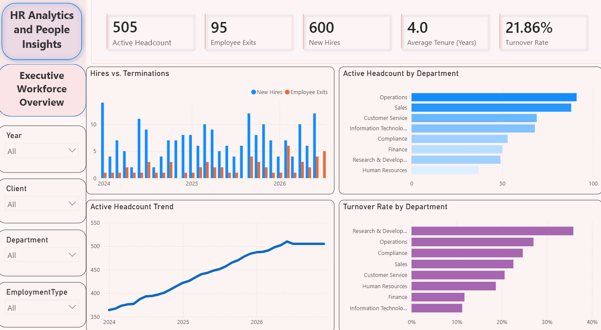
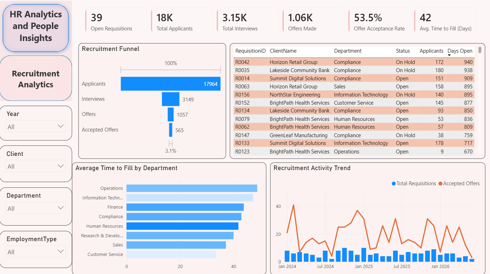
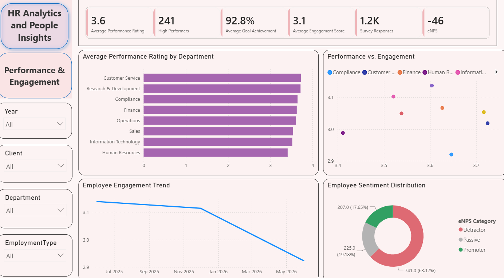
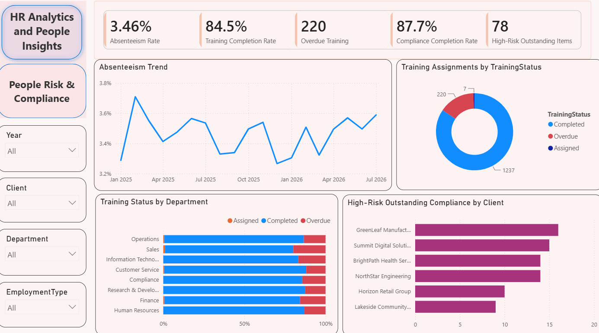

HR Analytics and People Insights
A workforce, recruitment, performance, and compliance analytics dashboard covering 505 active employees across multiple client organizations — four report pages, from executive-level headcount and turnover down to individual requisitions and compliance items.
The problem
This dashboard was built for an HR services model that manages workforce data across several
client companies at once (Horizon Retail Group, Lakeside Community Bank, Summit Digital
Solutions, NorthStar Engineering, BrightPath Health Services, GreenLeaf Manufacturing, and
others) — every page filters by Client as well as department and year. The goal
was to give HR leadership one place to answer four different questions: is headcount healthy
and who's leaving, is the recruiting pipeline actually converting, is performance and morale
trending the right direction, and where is compliance risk concentrated.
Data model
Built in Power BI Desktop with DAX measures across four report pages (Executive Workforce Overview, Recruitment Analytics, Performance & Engagement, and People Risk & Compliance). The SQL semantic model behind it is still in progress — check back soon for the full schema and queries.
Key findings
- Headcount is growing but retention is a real problem underneath it — active headcount climbed from roughly 350 to 505 over the period (600 new hires), but the overall turnover rate sits at 21.86%, and Research & Development has the highest departmental turnover of any team — an expensive place to be losing people.
- Engagement is trending down even though performance looks fine on paper — 92.8% average goal achievement and a 3.6 average performance rating sound healthy, but the engagement trend line has been sliding for a year (from ~3.15 to ~2.85), and the eNPS sits at -46, with 63% of survey respondents landing as Detractors versus just 18% Promoters. A classic case where the numbers that are easy to hit (goals) and the number that predicts attrition (sentiment) are moving in opposite directions.
- The recruiting funnel leaks hard, and a chunk of open requisitions are stale — of 17,964 applicants, only 565 end in an accepted offer (3.1% overall conversion), average time to fill is 42 days, and several open requisitions — mostly Compliance roles — have been open for 900+ days, well past what "42 days average" would suggest is normal.
- Compliance risk is concentrated in a handful of clients, not spread evenly — 78 high-risk outstanding compliance items and 220 overdue trainings exist company-wide, but GreenLeaf Manufacturing and Summit Digital Solutions carry noticeably more high-risk items than the other client accounts, which is exactly the kind of thing an account team would want surfaced rather than buried in an aggregate number.
- Absenteeism is noisy but stable — the absenteeism rate bounces between about 3.2% and 3.8% month to month with no clear upward or downward trend, averaging 3.46% over the period.
From the Power BI report
Built natively in Power BI Desktop with the DAX measures described above — four report pages, shown below.



